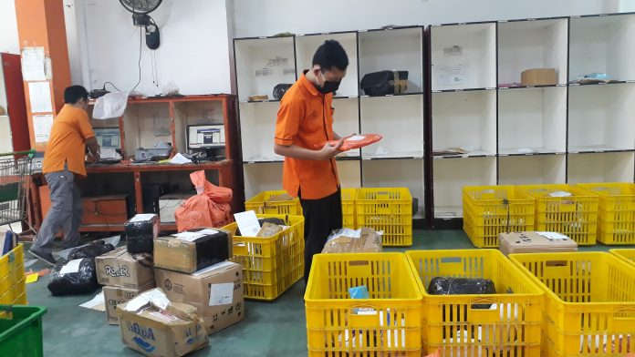
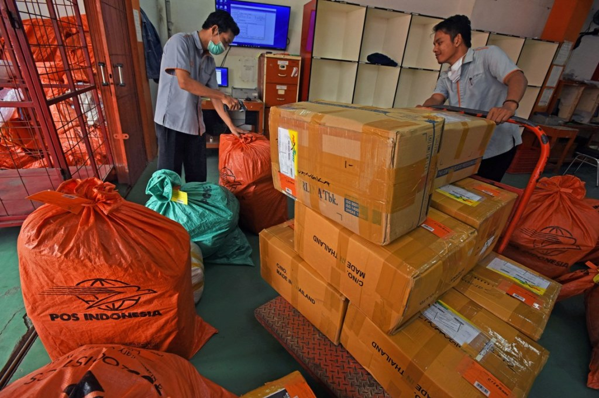
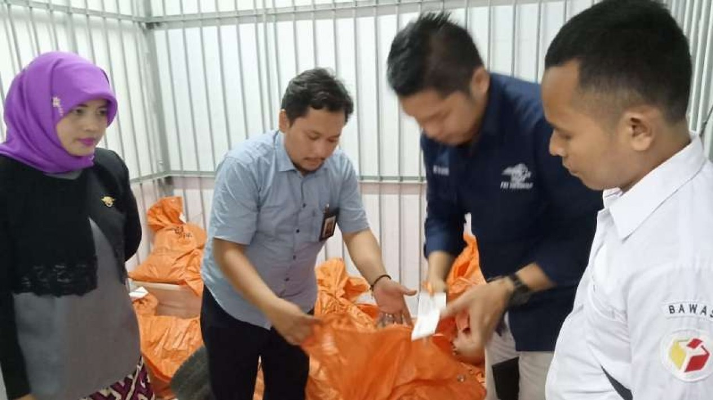
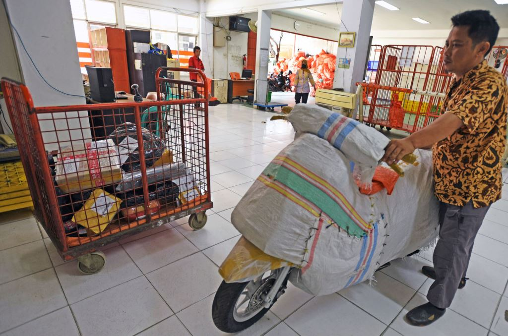

Di setiap pekerjaan yang sudah pernah kita lalui pasti tak lepas dari namanya kenangan, entah itu kenangan manis, indah, susah, atau yang lain-lainnya.
Apalagi disaat kita mengingat suka dan duka disaat kita masih bekerja di tempat tersebut, ya apalagi ketika bekerja di sebuah perusahaan logistik yang mengharuskan kita datang jam 5 pagi hanya sekedar untuk receving, dan unbagging.
ya kebetulan di perusahaan logistik tempat saya sebelumnya bekerja yaitu Kantor Pos masuknya jam 5 subuh, bahkan kadang-kadang bisa lebih awal kalo alat angkut kbm datangnya kecepetan.
mungkin agak repot sih, cuma lama-lama jadi terbiasa juga, selain itu meski gak pernah yang namanya foto-foto, tapi tetep aja ada yang sukarela mengabadikan momen disaat kita lagi sibuk kerja.
ya apalagi kalo bukan difoto sama jurnalis terus dimasukan ke media online lokal
kaya gini nih contoh fotonya

mohon maaf kalo fotonya gak sambil eksyen, soalnya harus jaim biar fotonya keliatan natural

ini kalo gak salah pas saya sama rifki pas lagi proses kiriman, pembuatan R7 yang nantinya kiriman tersebut bakal di loading ke KBM

Nah ini ni yang sempat bikin heboh dikala musim politik yang lalu Tabloid Indonesia Barokah, yang keberadaannya sama sekali gak bikin barokah, karena bikin puyeng pak manager maupun kita-kita, Wartawan, Polisi, sama Bawaslu gak berenti-berenti datang ke kantor, katanya tabloid ini disinyalir sebagai bentuk black campaign salah satu paslon karena alamta penerbitnya misterius.

Nah yang ini petugas senior paling Eksis, namanya Pak Andriansyah, tapi gak tau kenapa orang ini bisa dipanggil Solihin
pada saat saya menemukan foto ini ada yang janggal, yang dibahas di media online tersebut sedang membahas isu lingkungan terkait dampak aktivitas jual beli online, waduh-waduh... ini berarti secara gak langsung menyetarakan senior saya ini dengan limbah market place soalnya sampe dijadiin ilustrasi artikel hahaha...
sebenernya masih ada lagi foto lain yang bertebaran, cuma saya males aja muatnya kebanyakan. oh iya untuk memastikan beritanya dimuat di media mana? temen-temen bisa drag fotonya di pencarian SE, biasanya nanti akan muncul tatutan yg mengarah ke situs beritanya.
foto-foto tersebut mungkin jadi sebagian kecil kenangan yang terabadikan secara digital, namun itu sangat berarti bagi kami.
selamat datang di website pribadi saya, website yang menyajikan aneka konten tidak menarik, dan tidak seru.
jangan lupa sawerannya biar website ini makin berkembang, mau nyawer? Klik di sini cukup sekian dan terimakasih.
Nurul Aziz © 2022 Allrigth's Reserved
Powered By Macan Rabiez